Pingu discovers that he can throw his voice by speaking through a hose and funnel. Soon he is playing tricks on Robby, Pinga, Father and Grandfather by making them believe that fish or snowmen are talking to them. But they get their own back - and give Pingu an almighty fright!
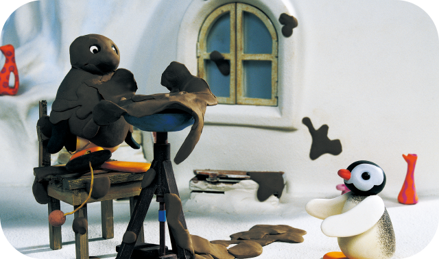
Episode 2
POTTERY PINGU
Pingu is very keen to have a go on Grandfather’s potter’s wheel. But his sorry-looking pottery is nowhere near as good as Grandfather’s magnificent urn. When Grandfather’s back is turned, Pingu decides to have another go. Soon the clay is flying in all directions, and the lid of Grandfather’s urn gets shattered. Luckily, Pingu’s wobbly bit of pottery makes a great replacement lid!
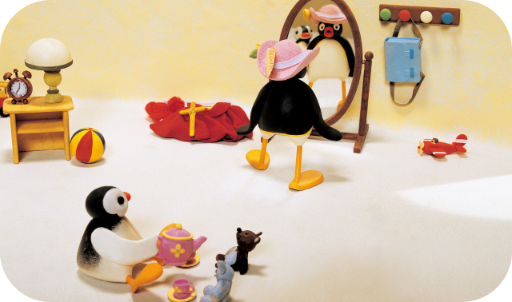
Episode 3
MOTHER'S NEW HAT
Mother sees a new hat at the shops - but it is bought by another penguin while Mother is browsing. So she settles for another hat, only for Pingu and Pinga to ruin it by playing too roughly. But they secretly patch it up - so that it’s as good as new, and in fact it now looks more like the hat that Mother really wanted!
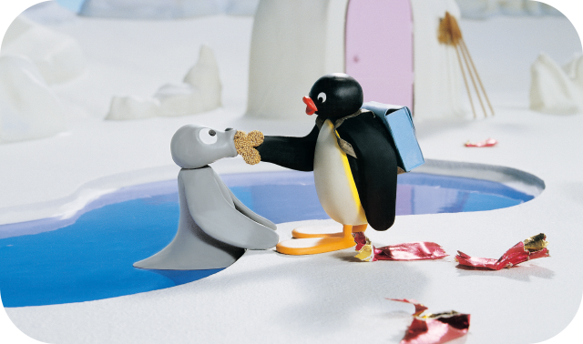
Episode 4
PINGU AND THE LITTER
Penguins come from all over to buy snacks at a new snack stall, and Pingu is first in the queue. He casually drops the wrapper when he’s eaten the treat, and everyone else copies him. Soon, the Antarctic is covered in wrappers, sticking to laundry (and Robby the seal!) and causing skiing collisions. Pingu realises that he is to blame, and leads a mass tidy-up!
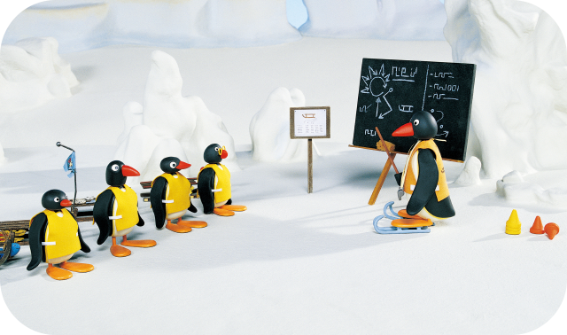
Episode 5
PINGU'S SLEDGE ACADEMY
Pingu is a bit of a tearaway when it comes to sledging - and there’s no way he’s going to attend the un-cool Sledge Academy - until Father steps in and tells Pingu he must take sledging lessons or never sledge again!
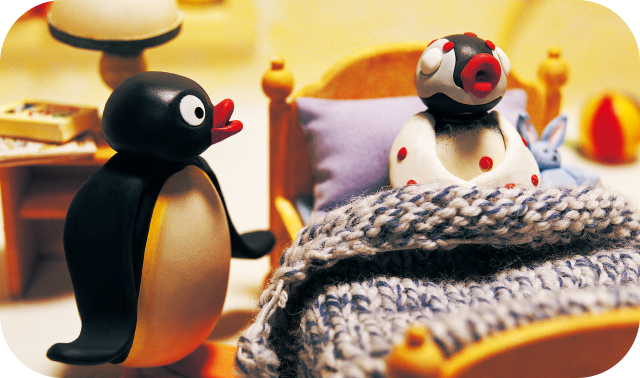
Episode 6
POOR PINGU
Pinga is ill, and Pingu is told to look after her - fetching cookies, teddies, milk and a damp cloth. He reckons it wouldn’t be too bad being ill; at least he’d get some attention! He fakes it, and is believed. Naughty Pingu! But then he comes out in a real rash, just like his sister. Pingu and Pinga both enjoy being looked after by Mother, Father and the nurse.
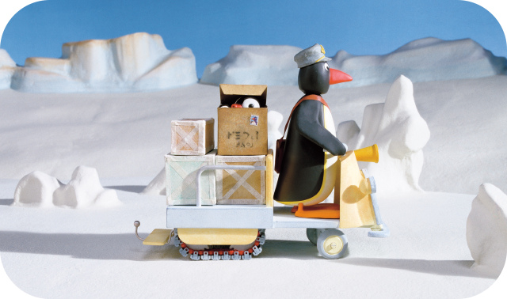
Episode 7
PINGA IN A BOX
Pingu and Pinga decide to play a surprise joke on Mother by putting Pinga in an old box so she can jump out like a jack-in-the-box. The joke works so well that they decide to play it on more people. But it all goes wrong when Father finds the box, and puts it onto his mail cart for delivery - with Pinga inside. Pingu has to chase after Father to make sure Pinga doesn’t get lost in the post!
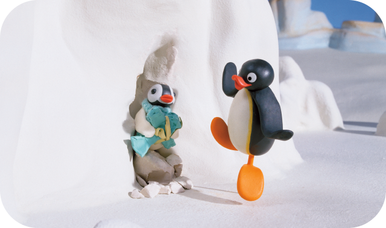
Episode 8
PINGU AND THE PRESENT
Pingu has been invited to a birthday party, and there’s no way he’s going to let Pinga come too! They go and buy a present, but when Pingu drops it into an ice crevice, he’s too big to squeeze in and get it back…But Pinga is! A grateful Pingu realises that she deserves to be at the party as much as he does!
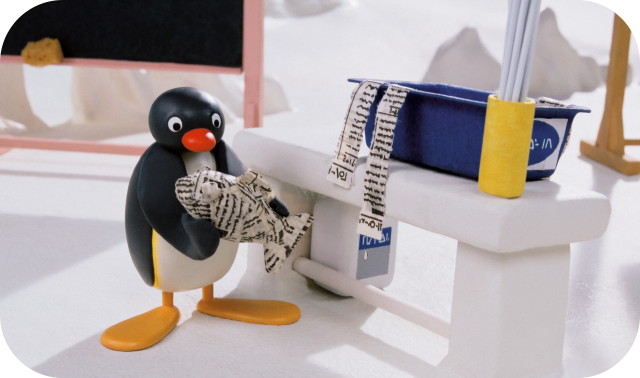
Episode 9
PINGU AND THE PAPER MACHE
Pingu’s teacher is showing the class how to make paper mache shapes - and Pingu and his friends are impressed. But when the teacher is called away, the little penguins start to experiment with the messy mush, and Pingu soon ends up completely covered in the sticky stuff!
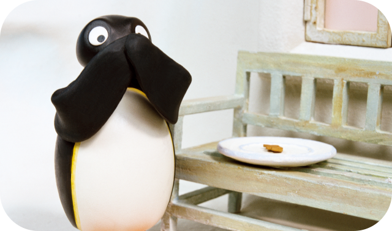
Episode 10
SORE TUMMY PINGU
Pingu just can’t get enough of his favourite fishy snacks. After he’s eaten his, he tries to scoff Pinga’s, then Grandfather’s. Soon Pingu is so stuffed he can hardly move, and has to go to the hospital. And when Pinga visits him and offers him a fishy snack - it’s the last thing he wants!
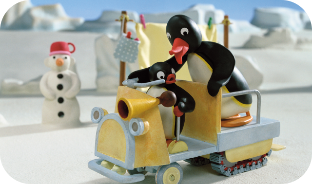
Episode 11
PINGU GETS CARRIED AWAY
Dad is giving Pingu a quiet driving lesson, when Pingu accidentally breaks the speed stick on the snowmobile - making it impossible to stop! Out of control, they cause chaos in the village, before smashing through a sweet stall. Pingu has to think fast to find a way of stopping the snowmobile before they drive into a fishing hole!
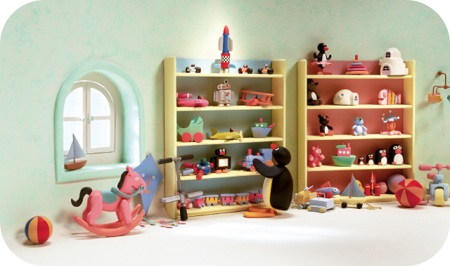
Episode 12
PINGU AND THE TOYSHOP
Pingu really wants a new toy, but Mother won’t buy him any of the toys he shows her while shopping. And then he spots a shiny red rocket on the top shelf of the toyshop... Using a pogo stick to get reach it, he ends up pogo-ing all over the shop and wrecking the place!
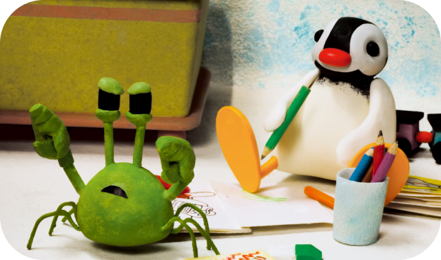
Episode 13
PINGU AND THE SCHOOL PET
Pingu is charged with looking after the school pet. It’s a crotchety crab that doesn’t like Pingu, and nips him on the beak whenever he holds it! But when the crab pinches Father, he throws it into a fishing hole. Pingu gets Robbie to help him to find a replacement crab so that he doesn’t get into trouble, and the new one is much fonder of Pingu. It even likes having its tummy tickled!
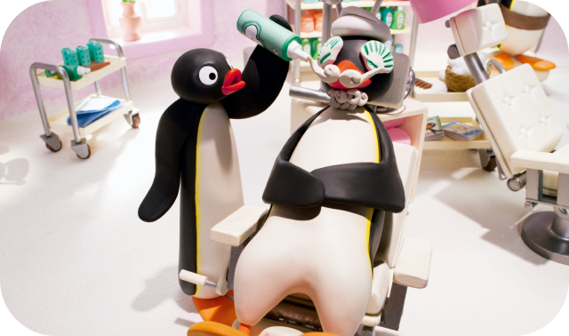
Episode 14
PAMPERING PINGU
Mother is having a bad day, and decides to treat herself at the beauty parlour. Pingu is forced to tag along, and is soon causing havoc for a harassed Mother and the snooty Beautician. He gets his comeuppance though when he is sprayed by a passing snowcart outside the parlour, and ends up back inside, wrapped in a pink fluffy towel underneath a big hairdryer!
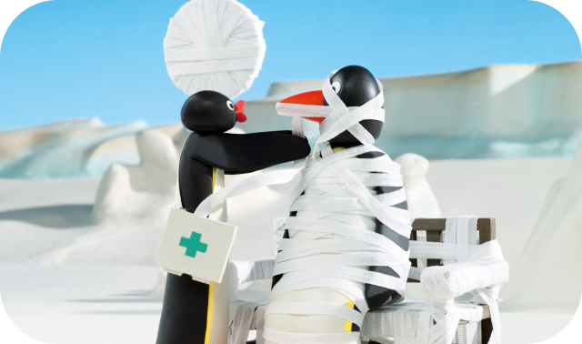
Episode 15
PINGU WRAPS UP
Pinga bumps her toe, while running away from Pingu in the igloo kitchen. Mother brings out some bandages, and Pingu has a great time wrapping up Pinga’s throbbing foot and making her giggle. Seeing the happiness that bandages can bring, Pingu sets out on a mission to bandage everything in his path - whether it is needed or not!
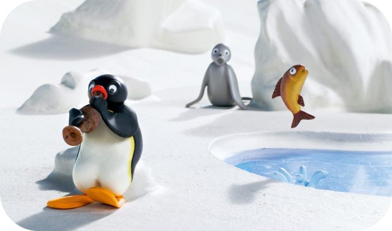
Episode 16
PINGU AND THE FISH FLUTE
Pingu finds a magical flute - but no one seems to appreciate his noisy tooting - except the fish. Pingu doesn’t realise it, but wherever he goes, his music charms the very fish from the water. When Robby stars barking madly at the effect his music is having on sea life, Pingu thinks it’s just another critic begging him not to play - until he sees that the flute has made him a fishy pied piper!
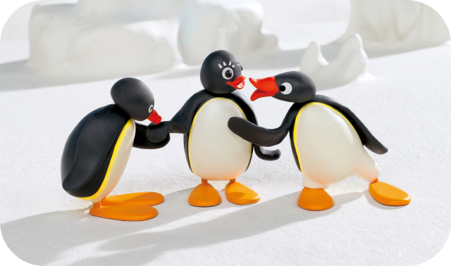
Episode 17
GREEN EYED PINGU
Pingi is playing happily with Pingo when Pingu joins them. But somehow he is always left out of their game, and Pingi seems to prefer playing with Pingo… The two boys get into a showing-off contest that spirals out of control. They bring Pingi gifts, show off their ball skills and generally try to out-do each other with flashy stunts as poor Pingi gets caught in the middle!
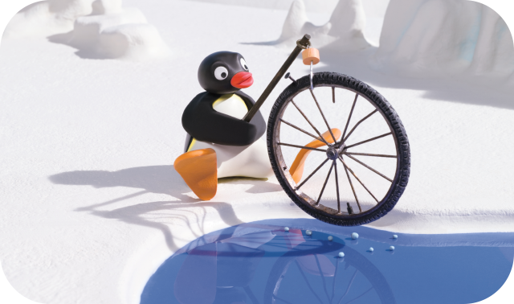
Episode 18
PINGU'S BIG CATCH
Pingu is off to do some fishing, and he claims that he’s going to catch a BIG one. He joins his friend Pingo at the fishing holes, but all Pingu reels in is junk! Meanwhile, Pingo has caught lots of fish. But even when Pingu swaps holes with his friend, he still catches rubbish! How will Pingu manage to catch the BIG fish he’s promised Mother?
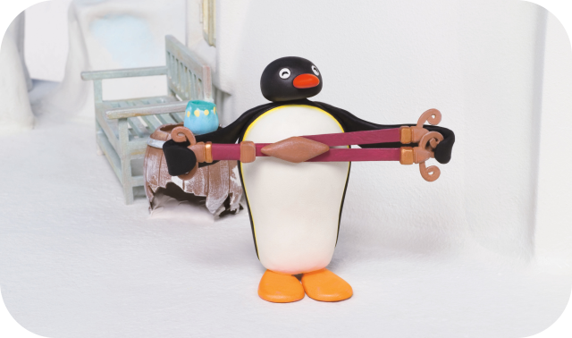
Episode 19
PINGU AND THE BRACES
Pingu and Pingg borrow a pair of Grandfather’s braces to play with, and Pingu decides to see how far he can run before being twanged backwards by the elastic. But the bungee fun gets out of hand and he makes a mess of Grandfather’s yard. To make amends, Pingu and Pingg attach the braces to Grandfather’s sled and drag a heavy parcel to the post office for him - husky style!
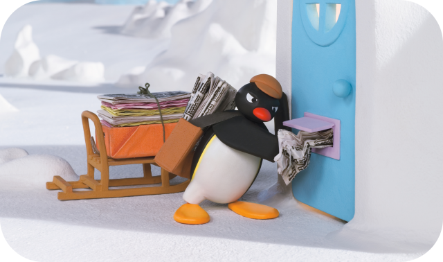
Episode 20
PINGU AND THE DAILY IGLOO
Pingu gets a paper round, and can’t wait to start delivering! He’s so keen he doesn’t even want Father to show him the basics. In all the rush he delivers the wrong newspapers to the wrong penguins, throws the papers carelessly through igloo windows, and squishes them through letterboxes. Now he‘s in trouble and needs Father’s help!
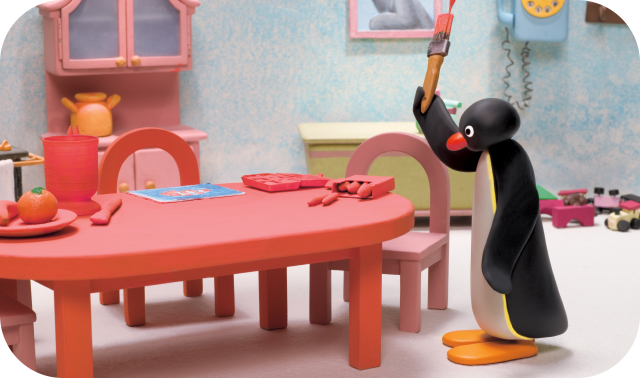
Episode 21
PINGU AND THE PAINT
Pingu is painting a picture at the kitchen table when he accidentally spills some red paint. He tries to make it look better by painting the whole table! Then he accidentally gets a splodge of paint on the wall too - so he turns it into a round sun and puts a picture frame over it! But things get out of control when Pingu spills some paint on a nearby igloo and ends up painting the whole town!
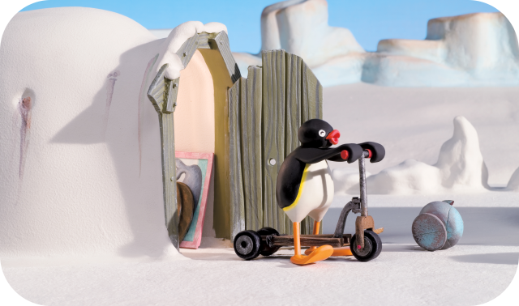
Episode 22
PINGU AND THE NEW SCOOTER
Pingu is ashamed of his rusty old scooter - he just can’t keep up with his chums. He falls in love with a brand new super-duper scooter in the shop, but it is quickly bought by Pingg instead! Pingu decides that the best thing to do is make his old rusty scooter even better than the new one, and with Father’s help he makes it the fastest, funkiest, flashiest scooter in the Antarctic.
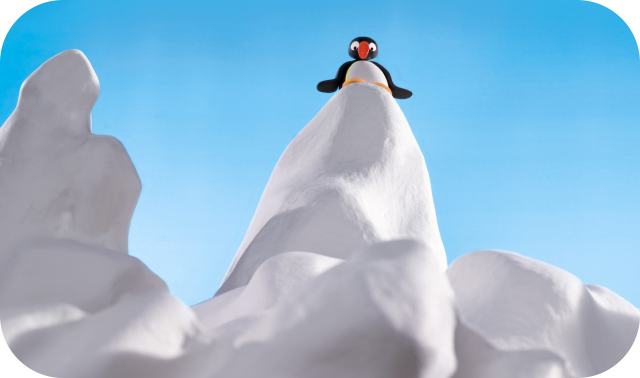
Episode 23
PINGU MAKES A SPLASH
Pingu is meant to be helping Father teach Pinga how to swim - but he is distracted by older penguins diving into the pool. He really wants to dive off the highest ice-shape and impress his friends, even though it’s too high. When Pingu gets all the way up there, he sees that penguin-diving is not as easy as it looks!
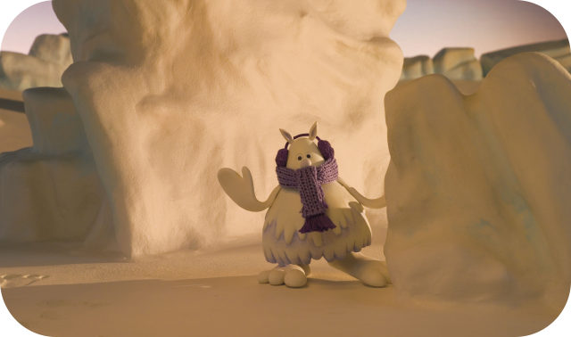
Episode 24
PINGU & THE ABOMINABLE SNOWMAN
Pingu wants to trick Pinga into thinking there’s an Abominable Snowman loose in the Antarctic, so he leaves some very big footprints for her to follow. But Pingu doesn’t know that there really is an Abominable Snowman on the prowl, and he too is following Pingu’s prints, looking for a friend!
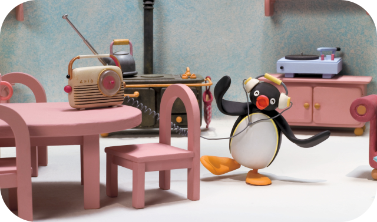
Episode 25
PINGU BOOGALOO
Pingu hears a new song on the radio, and can’t get enough of it - but every time he gets his groove on, the music stops! Will he ever hear the funky tune all the way through? Perhaps he should ask Father, who turns out to be a groovy penguin musician…
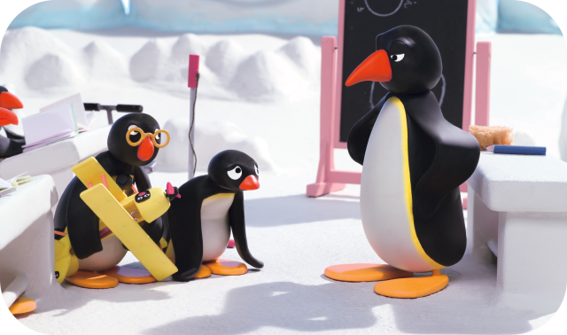
Episode 26
PINGU AND THE RUBBER BAND PLANE
Pingu’s classmate has brought a wind-up plane to school, and it really flies when you wind the propeller! Pingu swaps the rubber band for a bigger one so that the plane flies further - and it whizzes through the town, causing chaos. Pingu is in trouble! But then he ties the plane to a swing-ball set, and as it flies round and round, it helps his Maths teacher to explain circles to the class.